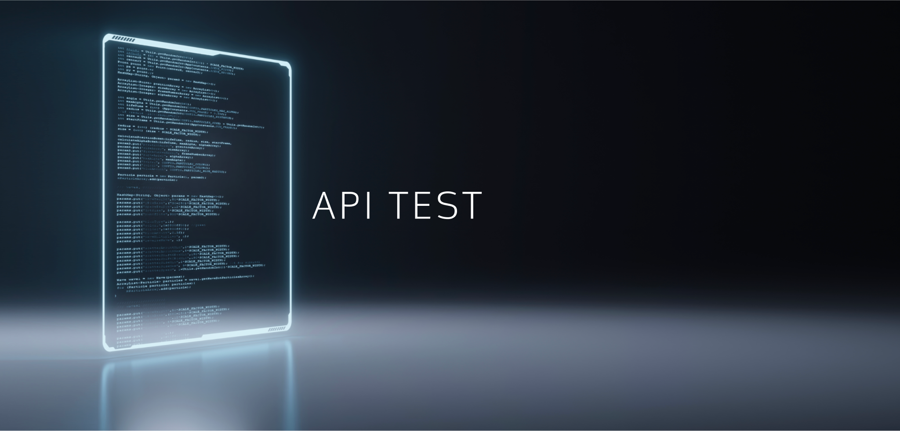

API Testing
API 테스트
시스템끼리 주고받는 요청과 응답을 직접 검증해, 서비스 연동이 기능·안정성·성능·보안 면에서 문제없는지 확인합니다.

DEFINITION
API 테스트란?
API 테스트(Application Programming Interface Testing)는 서로 다른 소프트웨어 시스템 사이의 통신과 연동을 위해 주고받는 API를 검증하는 테스트입니다.
다양한 오픈 플랫폼이 등장하고 많은 기업이 서로의 서비스를 연동하면서 API 테스트의 중요도는 날로 커지고 있습니다. API 테스트는 기능, 안정성, 성능, 보안성 등을 함께 평가합니다.
- 한 줄 정의
- 시스템 간 요청·응답을 검증하는 연동 테스트
- 검증 관점
- 기능, 안정성, 성능, 보안성
- 함께 쓰는 말
- 연동 테스트, 인터페이스 테스트
WHEN YOU NEED IT
이럴 때 API 테스트가 필요합니다
- 결제·지도·인증 같은 외부 서비스와 연동한다
- 앱과 웹이 같은 서버(백엔드)를 함께 쓴다
- 다른 회사에 우리 API를 제공하고 있다
- 화면이 나오기 전에 서버 로직부터 검증하고 싶다
WHAT WE CHECK
API 테스트는 네 가지 관점으로 검증합니다
요청이 서버를 거쳐 응답으로 돌아오는 흐름 전체를 대상으로, 기능부터 보안까지 함께 평가합니다.
- 01애플리케이션 · 클라이언트
- 02API 요청 (Request)
- 03서버 · 데이터 소스
- 04API 응답 (Response)
기능FUNCTIONALITY
요청에 대해 약속된 형식과 값의 응답이 돌아오는지, 잘못된 요청에는 올바른 오류를 돌려주는지 확인합니다.
안정성RELIABILITY
연동 시스템이 반복 호출과 예외 상황에서도 일관되게 동작하는지 확인합니다.
성능PERFORMANCE
호출이 몰릴 때 응답시간과 처리량이 기준을 만족하는지 측정합니다.
보안성SECURITY
인증·권한 처리와 데이터 노출 여부 등 연동 지점의 보안 문제를 점검합니다.
WHY TBELL
연동이 많을수록 전문가의 검증이 필요합니다
- 01
분야별 테스트 전문가가 개발자와 직접 소통
결함을 문서로만 넘기지 않습니다. 분야별 전문가가 개발자와 바로 이야기하며 원인을 좁혀 갑니다.
- 02
10개 산업 도메인의 업무 경험
금융, 자동차, 임베디드, 통신, 공공 등 업종마다 다른 품질 기준을 이해하고 테스트를 설계합니다.
- 03
고객 환경에 맞춘 실무자 교육
테스트가 끝난 뒤에도 품질이 유지되도록 고객사 실무자에게 필요한 교육을 함께 진행합니다.
FAQ
자주 묻는 질문
API 테스트란 무엇인가요?
서로 다른 소프트웨어 시스템이 통신하고 연동하기 위해 주고받는 API의 요청과 응답을 검증하는 테스트입니다. 기능, 안정성, 성능, 보안성을 함께 평가합니다.
화면(UI) 테스트와 무엇이 다른가요?
UI 테스트는 사용자가 보는 화면을 통해 확인하고, API 테스트는 화면 뒤에서 시스템끼리 주고받는 데이터를 직접 확인합니다. 화면이 완성되기 전에도 서버 로직을 먼저 검증할 수 있습니다.
API 테스트도 자동화할 수 있나요?
API는 입력과 출력이 명확해 자동화에 잘 맞습니다. 테스트 자동화와 함께 구성하면 배포마다 연동을 자동으로 확인할 수 있습니다.
왜 API 테스트가 점점 중요해지나요?
다양한 오픈 플랫폼이 등장하고 많은 기업이 서로의 서비스를 연동하고 있어, 한 곳의 연동 오류가 전체 서비스 장애로 이어질 수 있기 때문입니다.
연동 오류, 출시 전에 잡으세요
연동 대상과 API 명세를 알려 주시면 검증 범위와 방법을 제안해 드립니다.
070-7777-9113 · 월–금 09:30–18:00 (점심 12:00–13:00)